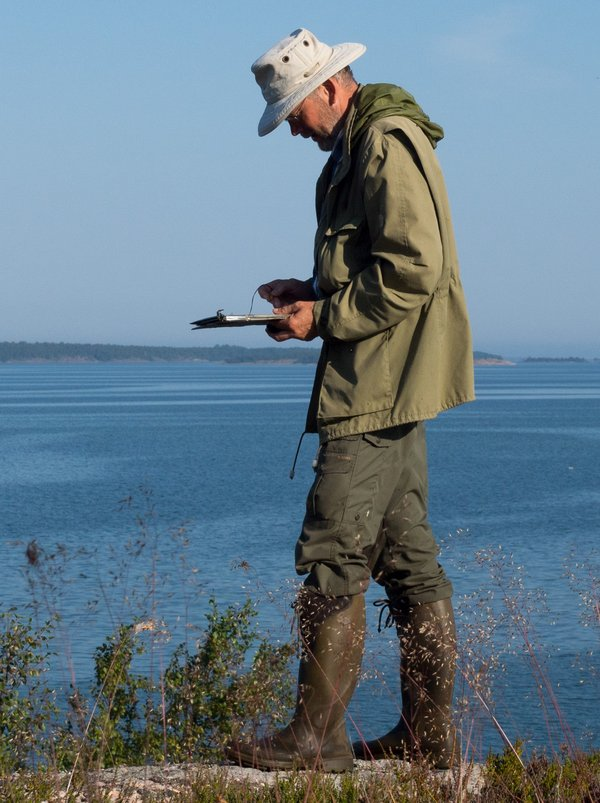
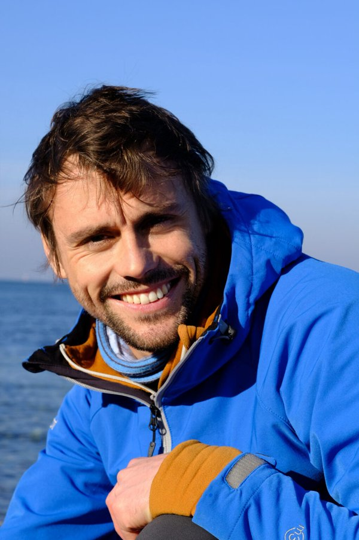
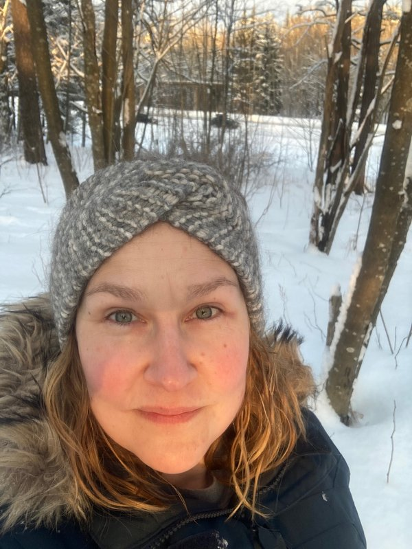
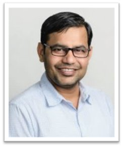
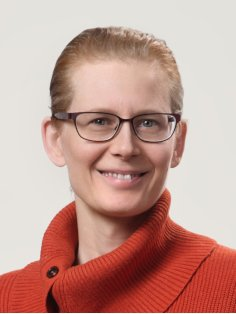

Supervisor Portfolio for the Doctoral Programme in Biosciences and Drug Research¶
Biochemistry
Cell Biology


Marine Biology
Katri AarnioChristoffer BoströmBoström's Lab Conny SjöqvistMolecular Ecology LabMartin SnickarsHusö
Conny SjöqvistMolecular Ecology LabMartin SnickarsHusö Anna Törnroos-RemesEnvironmental and Marine Biology
Anna Törnroos-RemesEnvironmental and Marine Biology Markus ÖstEider Research Team
Markus ÖstEider Research Team

Mikael von NumersMikael von Numers
Christian Pansch-HattichExperimental Ecology - Stress Ecology & Ecophysiology
Riikka Puntila-DoddMarine ecosystem ecologySonja Salovius-LaurenBiodiverSea-groupConny SjöqvistMolecular Ecology LabMartin SnickarsHusöAnna Törnroos-RemesEnvironmental and Marine BiologyMarkus ÖstEider Research TeamPharmacy

Kuldeep BansalPolymeric drug deliveryAnne FilppulaTranslational Drug Research Zhang HongboFunctional Materials for Medicine
Zhang HongboFunctional Materials for Medicine Jessica RosenholmBioNanoMaterials group
Jessica RosenholmBioNanoMaterials group
Outi Salo-AhenComputer-aided drug design (CADD) groupTapani ViitalaPharmaceutical BiophysicsXiaoju WangBiomaterials and Drug FabricationLast updated: